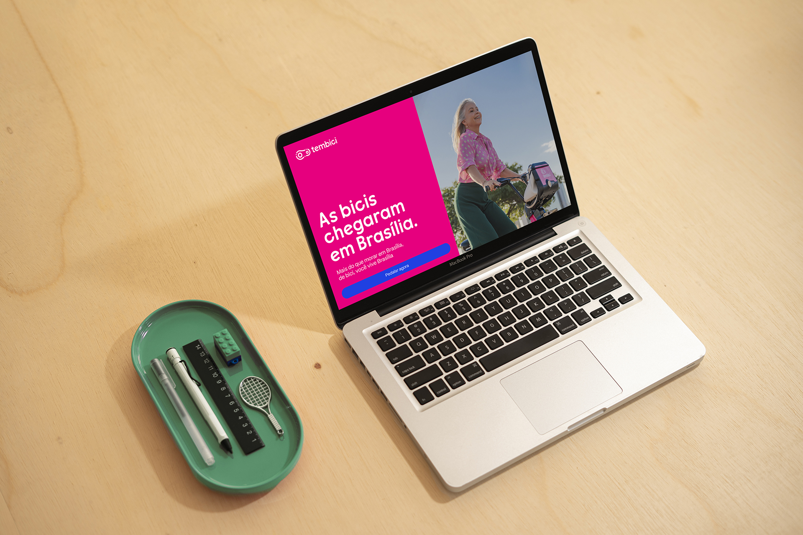
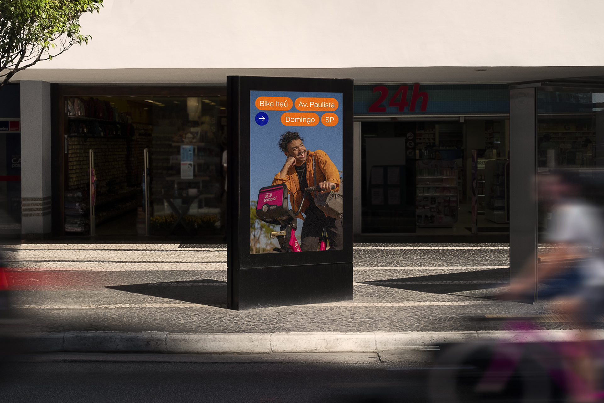
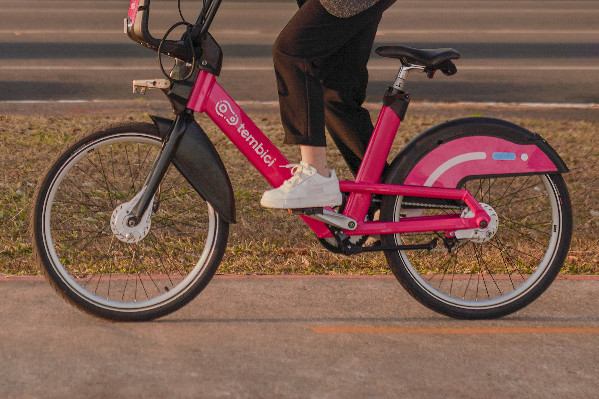
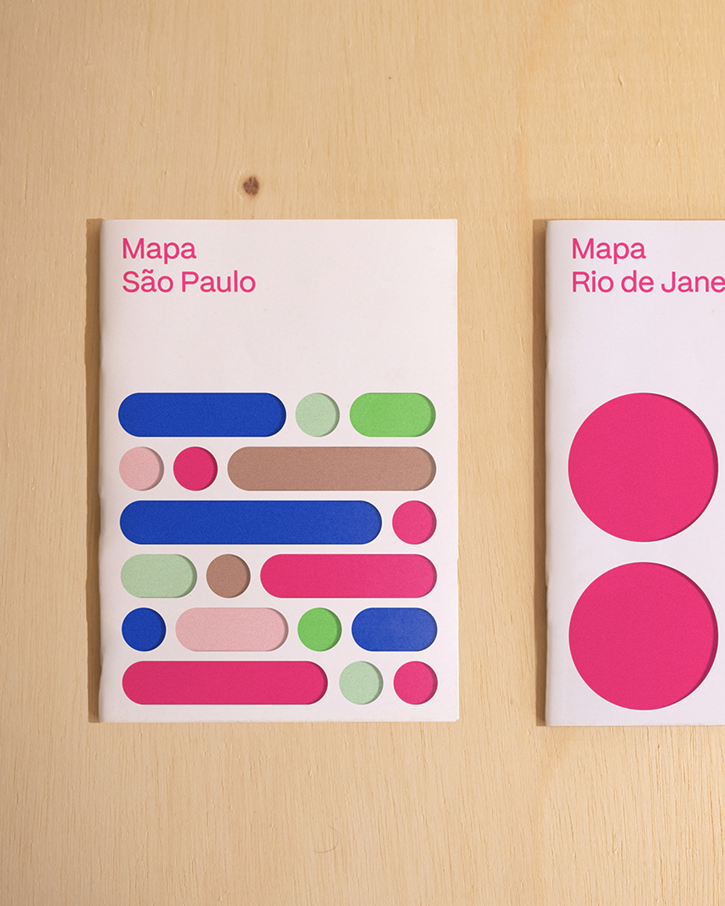

Inari Type
Information
Article
Tembici
Tembici is a pioneering company dedicated to transforming urban mobility. With significant growth since its inception, the need for change became evident, leading to the development of a new custom typography.
The typographic style was directly inspired by the logo designed by the talented designers at the Brazilian studio Polar Ltda. With a family of 7 weights, the font becomes adaptable to the company's commercial needs.
Typography:
Caio Kondo
Graphic Design Studio:
Polar, LTDA
2021
Services:
Typeface



